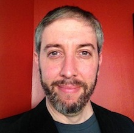
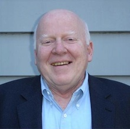
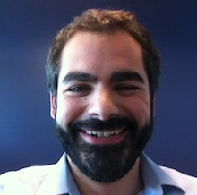
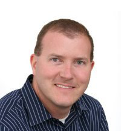
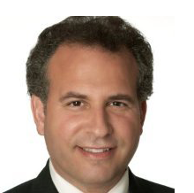

Smarter Medical Care is a health media company that helps reduce anxiety for patients and their friends and family. We provide education on how to deal with specific conditions and the related non-medical challenges that arise.
Team

Brian Rodvien
CEO
Brian has worked as multimedia engineer and producer for the last 10 years. As the former Chief Operating Officer of Smarter Medical Care he specialized in the production of health related content for distribution over the internet. Brian is a graduate of University of California at San Diego where he received a degree in Cognitive Science with an emphasis in Neuroscience.

Robert Rodvien, M.D.
Chief Medical Officer
Dr. Rodvien received his medical degree from Columbia University and then did 7 years of post-graduate work in Boston at Tufts, MIT and Harvard before going to San Francisco as a clinician and scientist. He was the Chair of the Division of Hematology and Oncology at California Pacific Medical Center, but active also in the cardiac surgery program, and the clinical coagulation laboratories.

Mark Bellias
CO-Founder
Mark has worked for the last 12 years in a variety of roles in the Investment Management Industry. With a specialty in Operations & Risk Management, Mark has built the Operations backbone for a large investment manager in San Francisco, CA. Mark is a graduate of Bryant University.

Chris Long
Board of Directors
Most recently, Chris was COO of StayWell Health Management where he led Operations, IT and Analytics and was responsible for the integration of StayWell's acquisition of LifeMasters, where he was General Manager prior to its acquisition. Prior to that, Chris developed and led a Business Process Outsourcing Center of Excellence at Blue Shield of California.

Jeff Miller
Director of Marketing
Jeff has over 20 years experience as a media executive and has held positions at Burrill & Company, Nielsen Business Media, Ziff Davis, IDG, CMP and Fawcett Publishing. He was Managing Director of Burrill Life Sciences Media Group. He was also VP of Sales at Newspage.com, Associate Publisher of “The Internet Industry Standard,” and a Publisher of MacUser Magazine, Windows Magazine and PC Magazine.
Vision
Founder Message
When people are threatened by any serious illness, learning about non-medical issues is an obvious but often neglected need. For example, What can a person do to prepare for a physician visit? At Smarter Medical Care, our mission is to offer practical information about matters in concise, casual conversations between medical experts during that period of time when people are confronting illness.
Our only mission at Smarter Medical Care is to promote a better quality of life for those needing to interact with the health care delivery system, including people with very different educational backgrounds and different degrees of anxiety.
Robert Rodvien, M.D.
Advisors
Linda Hawes Clever, M.D.
Advisor
President of RENEW, founding Chair of the Department of Occupational Health at California Pacific Medical Center and former Editor of the Western Journal of Medicine, received undergraduate and medical degrees from Stanford University. Dr. Clever is Board Certified in Internal Medicine and Occupational Medicine. In 1970, Dr. Clever became the first Medical Director of the teaching clinic at St. Mary's Hospital in San Francisco where she started patient education and nurse practitioner training and research programs. She has chaired the Boards of KQED and University High School and has served on numerous other boards including the Stanford University Board of Trustees. She is president of the Western Association of Physicians and serves on the Boards of the Buck Institute for Research in Aging and the Northern California Presbyterian Homes and Services.
Mark Singer M.D.
Advisor
Dr. Singer is a graduate of the Columbia University College of Physicians and Surgeons and has practiced head and neck surgery for over 30 years. His career has been split between academic medicine at the University of California, San Francisco (UCSF) teaching for the past 15 years and private practice. Dr. Singer has worked closely with the UCSF Cancer Center Melanoma clinic and tumor board, and is currently providing head and neck surgery for melanoma and other advanced cutaneous malignancies at California Pacific Medical Center.
Todd Gitlin
Advisor
An American writer, sociologist, communications scholar, novelist, poet, and not very private intellectual, is the author of fifteen books. He holds degrees from Harvard University (mathematics), the University of Michigan (political science), and the University of California, Berkeley (sociology). In 2003-06, he was a member of the Board of Directors of Greenpeace USA. He is now a professor of journalism and sociology and chair of the Ph. D. program in Communications at Columbia University. Earlier, he was for sixteen years a professor of sociology and director of the mass communications program at the University of California, Berkeley, and then for seven years a professor of culture, journalism and sociology at New York University. During 1994-95, he held the chair in American Civilization at the École des Hautes Études en Sciences Sociales in Paris.
Barry M. Straube, M.D.
Advisor
Director of the Marwood Group, a healthcare advisory and financial services firm headquartered in New York City with offices in Washington, DC, London & Kuwait. The Group provides services to institutional investors, corporations and trade associations. Dr. Straube is also a member of the Boards of NxStage Medical, a medical device company, Arbor Research Collaborative for Health, and National Patient Advocate Foundation, a national non-profit organization providing the patient voice in improving access to, and reimbursement for, high-quality healthcare through regulatory and legislative reform at the state and federal levels. Dr. Straube received an A.B. degree (magna cum laude, Phi Beta Kappa) from Princeton University and received his M.D. degree from the University of Michigan Medical School.He completed an internal medicine residency at California Pacific Medical Center in San Francisco. He is board-certified in Internal Medicine and Nephrology.
Peter Krause
Advisor
Peter Krause has been a person threatened by a bone marrow cancer since the age of 19. His life was profoundly changed by being told his “diagnosis”. Eventually, he learned how to live with his illness, eventually becoming self-trained in business. He continues to be passionate in his quest to help others understand medicine better. As VP of Product Development: Peter is a founder of Terradatum and the underlying vision of the BrokerMetrics® product suite. His vision represents the quintessential repertoire for real-time market information blended with a broker's own business data and offers a myriad of visually-oriented charts and graphs to help intuitively understand a changing market landscape. Previously, Peter was a key architect in the development of web-based MLS systems for HomeSeekers and Terradatum's earlier MLS services, both successful initiatives embraced by the industry. Peter holds an economics degree from the University of San Francisco. His motto is, "Software never sleeps."
Morris Flaum, M.D., MBA
Advisor
Served as the Vice President of Medical Affairs and Chief Medical Officer at California Pacific Medical Center in San Francisco, Chief Executive Officer of the Physician Foundation at St. Luke's Hospital and CEO of the Sutter Pacific Medical Foundation at California Pacific Medical Center . He also served as a member of Executive Management at California Pacific Medical Center, and as a Director of California Pacific Medical Center. Dr. Flaum also served as Chairman of the Board and Director at California Transplant Donor Network. Dr. Flaum received his medical degree from the University of Miami School of Medicine. He completed his internship and residency at Yale-New Haven Hospital in New Haven, Conn., and was a clinical associate in hematology at the National Institutes of Health in Bethesda, MD.
S. Andrew Lasher, Jr., M.D.
Advisor
Board certified in internal medicine, certified by the American Board of Palliative Care. He holds an M.D. from University of Texas at Houston, did his Internship and Residency at Stanford University Medical Center and Fellowship at the VA Medical Center in Palo Alto. Presently, he is the chief medical officer of a palliative care company in Nashville, Tennessee.
Cecily Wait, M.D
Advisor
A graduate of the University of California San Diego, Dr. Wait received her medical degree from the Oregon Health and Science University. She trained in both medicine and pediatrics at the University of Minnesota. Dr. Wait accepted an assignment in the Pediatric AIDS Corps to work in Mwanza, Tanzania, beginning in July, 2009.